Relief ground: hills, banks and slopes
Open Terrain Test Fields on the title screen and choose Bluff and hollow or Rolling meadow. This pass reworks the ground under the woodland: real raised ground with crumbling earth banks, and gentle hills that read through their light. Trees and the lab screen are unchanged.
Result: the bluff now stands as a plateau with a stratified face of sandy soil and pale stone, turf hanging over its crest and fallen blocks at its foot. Gentle slopes turn golden toward the sun and cool teal away from it, as in the hill study. All captures are native Godot (GL Compatibility, 1920×1080) with zero recorded errors. This is still a lab-only renderer and has not been accepted for battles.
Concept A in motion
An 8-second Seedance 2.5 clip made from concept A (Higgsfield, image as the start frame, 1080p, no sound, 128 credits). The camera pushes in slowly and drifts across the bluff, a warm sun shaft opens over the upper left, the trolls turn their heads and the red banners stir. The painted style, the high camera and every unit stay as painted: one continuous shot with no cuts, new objects or text.
projects/meridius/review/terrain/concept_a_seedance.mp4).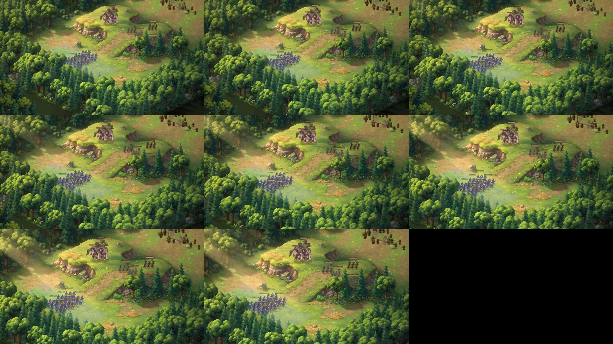

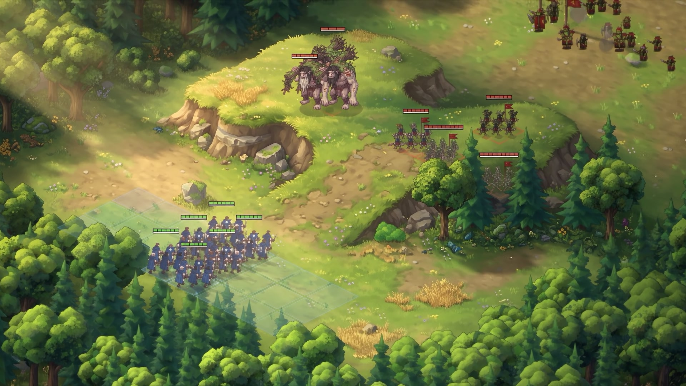

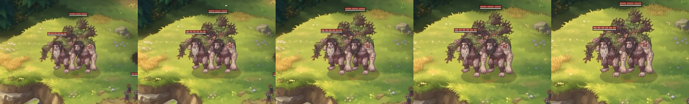

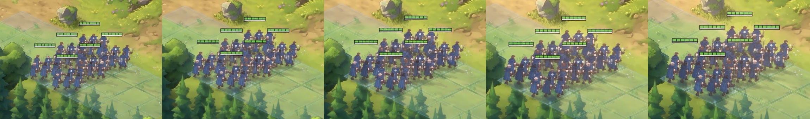

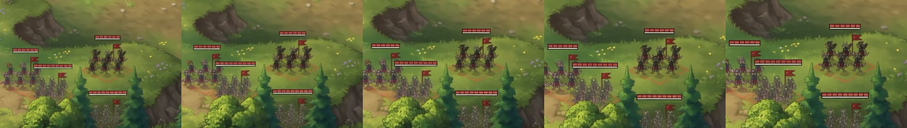

Raised ground with banks
The new field is a three-level plateau, steep toward the camera with a long ramp behind it, a track along its foot and a smaller rise to the east. Its face is painted upright in screen space: thick level beds of sandy soil and darker loam, now and then a pale stone slab, each bed with a lit ledge and a soft undercut, and only a few open cracks. The turf hangs over the crest in ragged tongues, and faceted blocks fallen from the face lie along its foot, lit like the rock props. Patrols can climb the ramp to the top.
The second pass (24 October, afternoon) removed the masonry look of the first: blocks four times longer, most joints closed, no stone checkerboard and no stepped brightness from block to block.
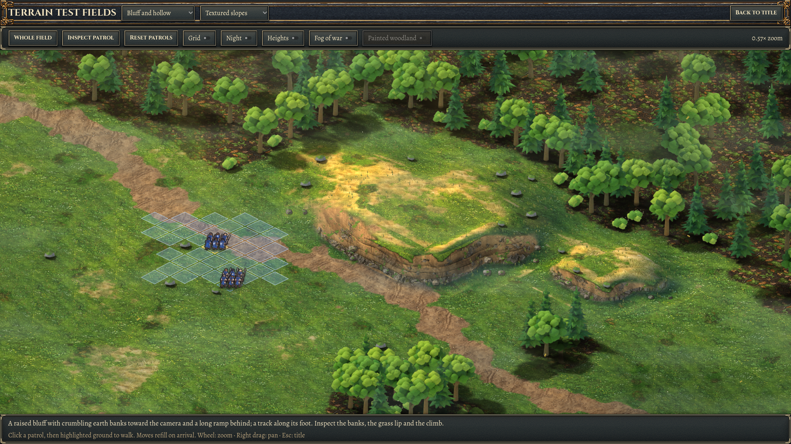

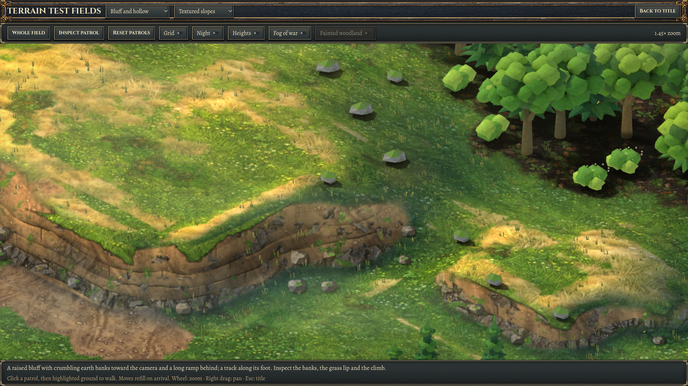

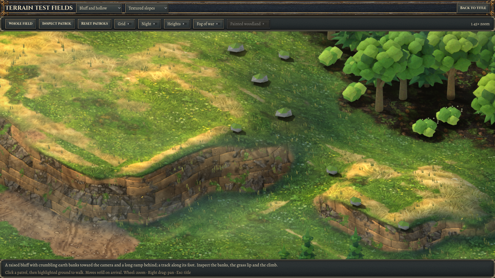

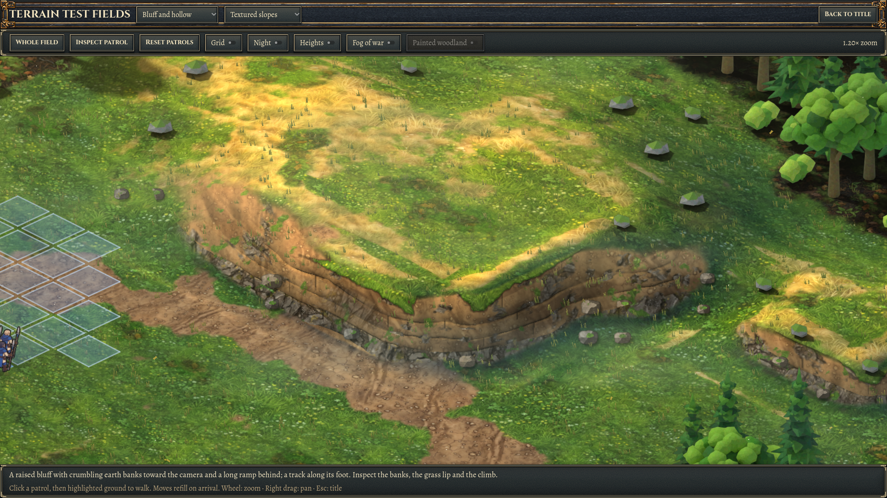

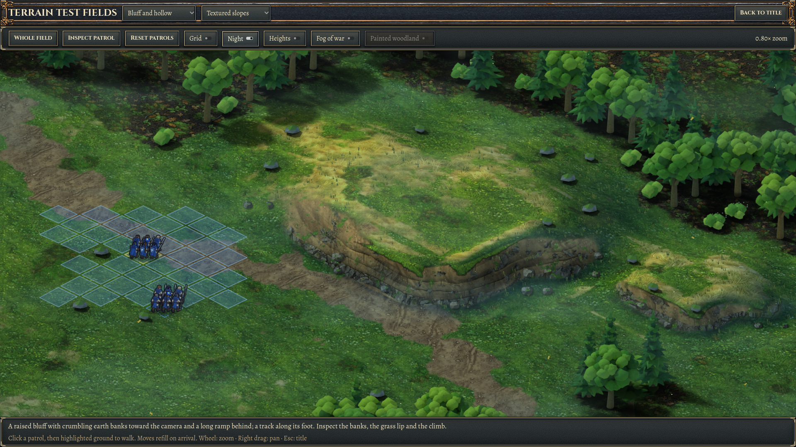

Gentle hills that read
The hills' light was already correct, but it was lost in a busy, uniformly green texture. The lit flank of the meadow's main hill now measures about 1.6× the flat ground and the shaded flank about 0.7× (mist off). The painted textures keep about 70% of their detail contrast, and the slopes shift hue, golden toward the sun and teal away from it.
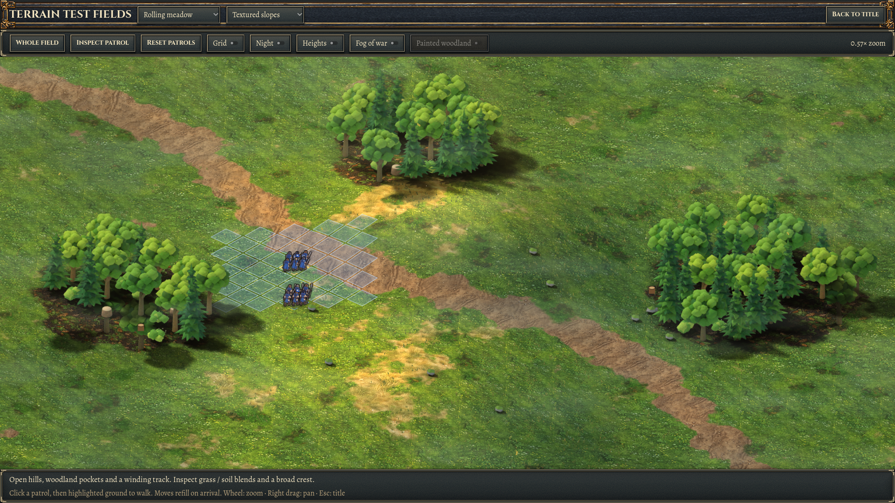

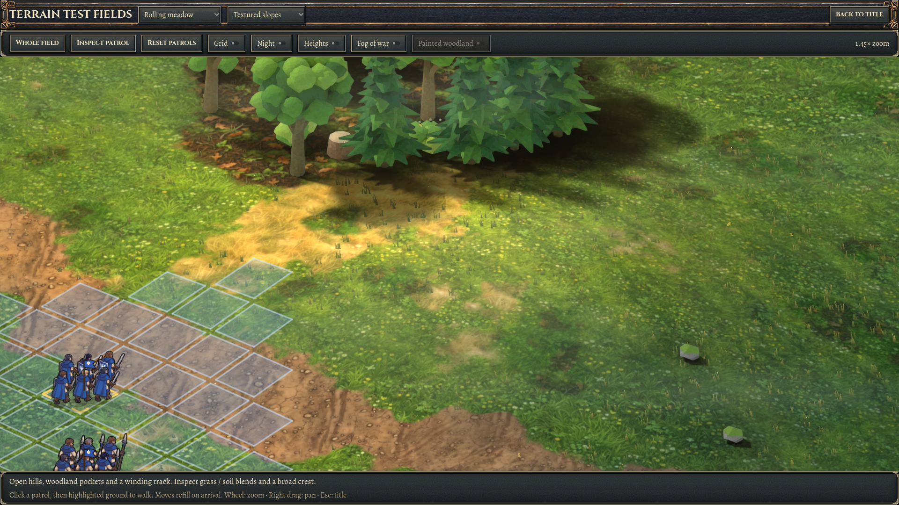

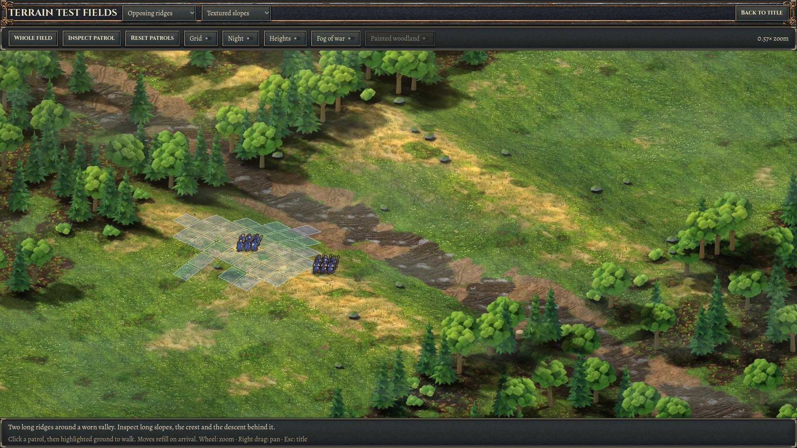

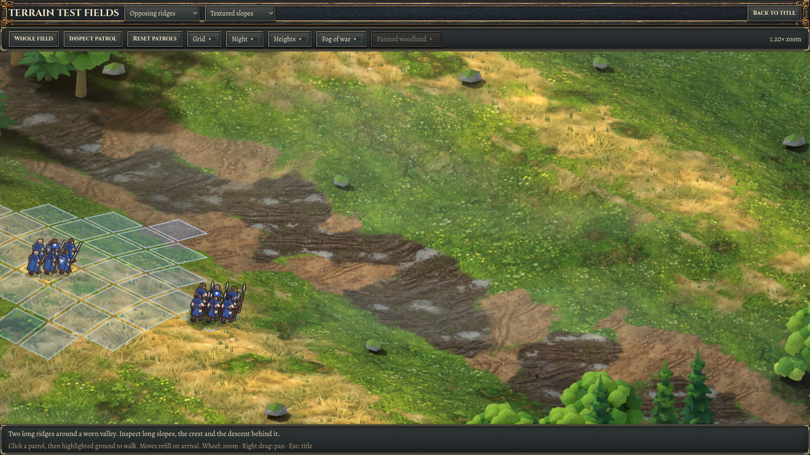

Targets
Concept A is the look for raised ground; the hill study shows how a gentle slope should read through hue as much as value.
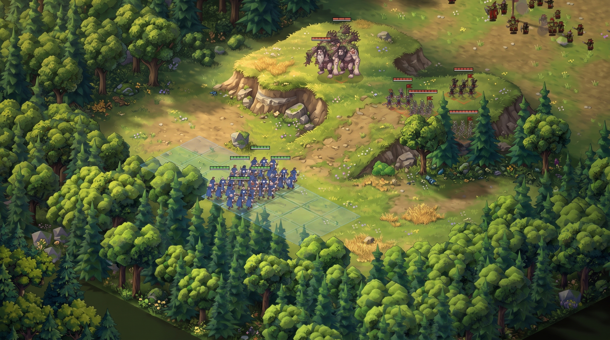

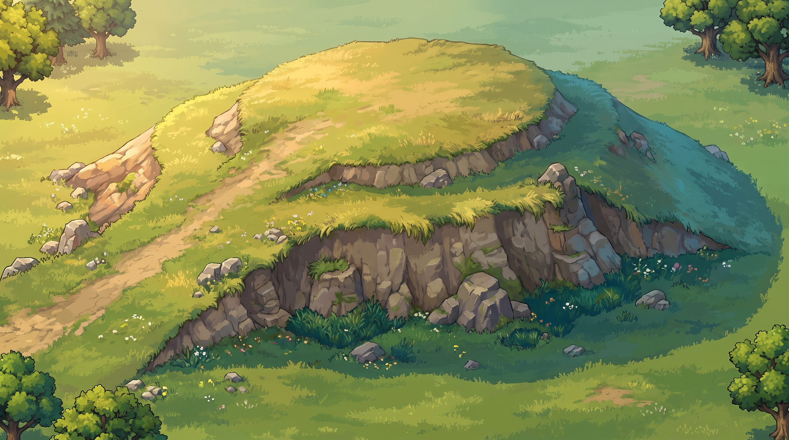

Open points
- The lab's drifting mist lifts shaded slopes noticeably and flattens the gentle hills. Lowering it in open ground would help the slopes read.
- On the bluff's curved west end the strata follow the height lines and still show as faint arcs. The fallen blocks are on the small side compared with concept A.
- Relief stays lab-only. Production battles keep the current renderer until the new terrain is accepted.